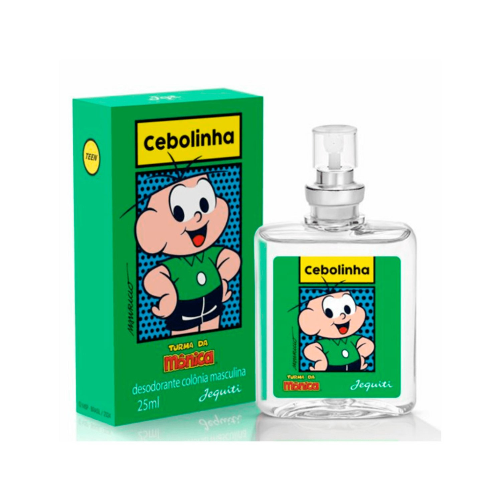

Perfumes Jequiti em Copacabana e Zona Sul
Está procurando perfume Jequiti em Copacabana? Veja fragrâncias em destaque, conheça notas e volumes e consulte pelo WhatsApp o catálogo atual, estoque e opções para o seu bairro.
Informe bairro ou CEP para confirmar a possibilidade, o prazo e o custo de atendimento/entrega. Não há endereço de loja física informado nesta página.
Perfumes Jequiti para consultar
Confira informações individuais sobre o Cebolinha, Patricia Abravanel Essence, Eliana Cristal, Adriane Galisteu e Bem-Me-Quer Euforia. Cada página tem perfil olfativo, volume, referência, perguntas frequentes e link direto para perguntar sobre o produto.
Como consultar preço e disponibilidade
- Escolha a fragrância e abra a página do produto.
- Toque em “Consultar no WhatsApp”.
- Informe Copacabana ou seu bairro/CEP na Zona Sul.
- Confirme preço do catálogo vigente, estoque, forma de pagamento e opções de entrega ou retirada antes de concluir.
Atendimento por bairro
Você pode perguntar sobre Copacabana, Leme, Ipanema, Leblon, Botafogo, Flamengo, Laranjeiras, Gávea, Lagoa e Urca. A lista ajuda a identificar a região do pedido, mas não representa promessa automática de cobertura, prazo ou gratuidade.
A disponibilidade depende do endereço, do produto, do catálogo e da confirmação da consultora.
Consulte agora no WhatsApp
Para receber informação correta, envie o nome do perfume e o bairro ou CEP. O atendimento confirma a situação atual em vez de exibir preço ou estoque que podem ficar desatualizados.
💬 Abrir conversaPerguntas frequentes: Jequiti em Copacabana
Como consultar perfumes Jequiti em Copacabana?
Escolha um perfume e chame pelo WhatsApp. Informe bairro ou CEP para consultar catálogo, estoque e opções disponíveis de atendimento, entrega ou retirada.
Vocês têm loja física em Copacabana?
Esta página não divulga endereço de loja física. Consulte pelo WhatsApp se existe uma opção de atendimento, entrega ou retirada para o seu endereço.
Quais bairros da Zona Sul posso consultar?
Informe Copacabana, Leme, Ipanema, Leblon, Botafogo, Flamengo, Laranjeiras, Gávea, Lagoa ou Urca para verificar as opções disponíveis. A cobertura é confirmada para cada pedido.
O preço e o estoque são atualizados nesta página?
Não. Preços e disponibilidade variam conforme catálogo e estoque; confirme pelo WhatsApp antes de fazer o pedido.
Sobre esta página
Esta é uma página informativa de revenda independente. Jequiti e os nomes das fragrâncias pertencem aos respectivos titulares. Não há associação oficial indicada. As páginas de produto citam fontes e descrevem os dados disponíveis; consulte o catálogo para informações atuais.
Voltar para Top 5 perfumes Jequiti mais buscados.